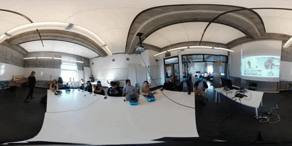

<!DOCTYPE html><html lang="en"><head><meta charset="utf-8"><meta name="viewport" content="width=device-width, initial-scale=1.0"><title>cdste</title><link rel="stylesheet" type="text/css" href="//fonts.googleapis.com/css?family=Ubuntu+Mono|Lato"><link rel="stylesheet" href="../../res/main.css"><link rel="stylesheet" href="../../res/grid.css"><link rel="stylesheet" href="../../res/project.css"></head></html><body><div class="project-page"><div class="body_div"><div class="vertical_center"><a href="../../index.html"><div id="site_title">$ cd Ste<div class="box blink"> </div></div></a><div class="project-title">Spring 2019 Arch 129/229 – XR Maps of Berkeley: Learning in Virtual Reality</div><div class="role"><span class="bold">Role:</span>Graduate Student Instructor</div><div class="blurb">Maps of Berkeley is a new course for incoming undergraduate students across campus,
focusing on cutting-edge, multidisciplinary topics addressed from different perspectives across our faculty,
each providing unique and complementary insights into complex problems of contemporary society.
Topics for the initial edition of the course include The Future of Work, Enhanced Human Beings, and others.</div><div class="role bold">My Student's Final Projects:</div><iframe src="https://berkeley.app.box.com/embed/s/7vt3i6ptpeclv0wpy37qimkbarqvgptz?sortColumn=date&amp;view=list" width="500" height="400" frameborder="0" allowfullscreen="allowfullscreen" webkitallowfullscreen="webkitallowfullscreen" msallowfullscreen="msallowfullscreen"></iframe><br></div></div></div><script src="https://ajax.googleapis.com/ajax/libs/jquery/1.8.3/jquery.min.js"></script><script src="https://unpkg.com/colcade@0/colcade.js"></script><script src="../../res/app.js"></script></body>